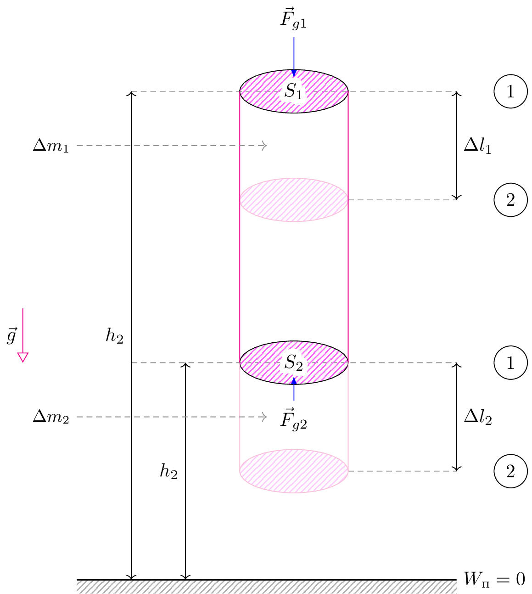

pre.tex
\documentclass[tikz]{standalone}\input{pre.tex}\begin{document}\begin{tikzpicture}%[rotate=15]
\draw[axis] (4,-2) -- (6,-2);
\draw[axis] (4,3) -- (6,3);
\draw[axis] (0,0) -- (6,0);
\draw[axis] (0,5) -- (6,5);
\draw[pattern=north east lines, pattern color=magenta!60] (3,5) ellipse (1cm and 0.4cm);
\contourlength{1mm};
\draw[pattern=north east lines, pattern color=magenta!60] (3,0) ellipse (1cm and 0.4cm);
\draw[pattern=north east lines, pattern color=magenta!20, draw=magenta!30] (3,3) ellipse (1cm and 0.4cm);
\draw[pattern=north east lines, pattern color=magenta!20, draw=magenta!30] (3,-2) ellipse (1cm and 0.4cm);
\draw[magenta] (2,5) -- (2,0);
\draw[magenta] (4,5) -- (4,0);
\draw[magenta!30] (2,0) -- (2,-2);
\draw[magenta!30] (4,0) -- (4,-2);
\draw[interface] (-1,-4) rectangle ++(7,-0.25);
\draw[thick] (-1,-4) -- (6,-4);
\draw[<->] (1,-4) -- node[left]{$h_2$} (1,0);
\draw[<->] (0,-4) -- node[left]{$h_2$} (0,5);
\draw[<->] (6,-2) -- node[right]{$\Delta l_2$} (6,0);
\draw[<->] (6,3) -- node[right]{$\Delta l_1$} (6,5);
\draw[acceleration,->] (-2,1) -- node[left]{$\vec{g}$} ++(0,-1);
\node at (7,5) [shape=circle,draw] {1};
\node at (7,0) [shape=circle,draw] {1};
\node at (7,3) [shape=circle,draw] {2};
\node at (7,-2) [shape=circle,draw] {2};
\node at (6,-4) [right] {$W_\text{п}=0$};
\node at (3,0) {\contour{white}{$S_2$}};
\node at (3,5) {\contour{white}{$S_1$}};
\draw[force,->] (3,6) node[above]{$\vec{F}_{g1}$} -- (3,5.25);
\draw[force,->] (3,-0.7) node[below]{$\vec{F}_{g2}$} -- (3,-.25);
\draw[->, axis] (-1,4) node[left,black] {$\Delta m_1$} -- ++(3.5,0);
\draw[->, axis] (-1,-1) node[left,black] {$\Delta m_2$} -- ++(3.5,0);
\end{tikzpicture}\end{document}